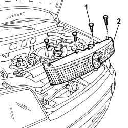
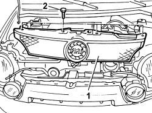

Procedures › 70 FITTINGS › 7055 MOULDINGS ON PROTECTIONS › 7055A EXTERIOR MOULDINGS › 7055A42 FRONT GRILLE - R+R 7055A42 FRONT GRILLE - R+R
Path Procedures > 70 FITTINGS > 7055 MOULDINGS ON PROTECTIONS > 7055A EXTERIOR MOULDINGS > 7055A42 FRONT GRILLE - R+R
Kind repair procedure (removal / refitting; the operation number is the code)
Applies to all engines; all production periods
Interactive page https://sloeber94.github.io/elrnDB-fPnd/en/#/2753303
Applies to: all engines; all production periods

Applies to: engines: 1.3 JTD 16v; all production periods; only with equipment: SUV
1. Fit the front grille in its seat.
2. Tighten the fixing bolts.

Topics linked from this page (1)
Topics that link to this page (54) 0510A20 timing gear with belt drive - check - carry out operation with cam cover(s) removed and tappets adjusted repair procedure (removal / refitting; the operation number is the code) · engines: 1.1, 1.2 8v; all production periods 0510A30 cam lift - check with cam cover(s) removed repair procedure (removal / refitting; the operation number is the code) · engines: 1.1, 1.2 8v; all production periods 1016C10 SINGLE CYLINDER HEAD, REMOVED - OVERHAUL repair procedure (removal / refitting; the operation number is the code) · engines: 1.1, 1.2 8v; all production periods 1016C11 SINGLE CYLINDER HEAD-R R GASKET FOR VERSIONS WITH AIR CONDITIONER repair procedure (removal / refitting; the operation number is the code) · all engines; all production periods 1020D14 FRONT CRANK SHAFT OIL SEAL COVER - R + R AND REPLACE SEALS FOR VERSIONS WITH OIL PUMP ON CRANK SHAFT, TIMING SIDE repair procedure (removal / refitting; the operation number is the code) · engines: 1.1, 1.2 8v; all production periods 1020D16 FRONT CRANKSHAFT OIL SEAL COVER - R+R AND REPLACE GASKETS FOR VERSIONS WITH AIRCONDITIONER repair procedure (removal / refitting; the operation number is the code) · engines: 1.1, 1.2 8v; all production periods 1020D18 FRONT CRANK SHAFT COVER OIL SEAL - REPLACE repair procedure (removal / refitting; the operation number is the code) · engines: 1.1, 1.2 8v; all production periods 1020D20 FRONT CRANKSHAFT COVER OIL SEAL - REPLACE FOR VERSIONS WITH AIR CONDITIONER repair procedure (removal / refitting; the operation number is the code) · engines: 1.1, 1.2 8v; all production periods 1020D26 FLYWHEEL SIDE OIL SEAL COVER - R+R repair procedure (removal / refitting; the operation number is the code) · engines: 1.1, 1.2 8v; all production periods 1020D38 flywheel side oil seal - replace repair procedure (removal / refitting; the operation number is the code) · engines: 1.3 JTD 16v; all production periods 1024B10 engine flywheel - r + r for versions with manual gearbox repair procedure (removal / refitting; the operation number is the code) · engines: 1.1, 1.2 8v; all production periods 1024B12 engine flywheels rr for versions with manual gearbox and air contioner repair procedure (removal / refitting; the operation number is the code) · all engines; all production periods 1024B13 ENGINE FLYWHEEL - R.R. FOR MODELS WITH MECHANIC TRANSMISSION AND FOUR-WHEEL DRIVE repair procedure (removal / refitting; the operation number is the code) · engines: 1.2 8v; all production periods 1028H20 piston with connecting rod - r r repair procedure (removal / refitting; the operation number is the code) · engines: 1.1, 1.2 8v; all production periods 1028H21 piston with connecting rod - r r repair procedure (removal / refitting; the operation number is the code) · all engines; all production periods 1032B10 toothed timing belt - r + r for timing adjustment or replacement repair procedure (removal / refitting; the operation number is the code) · engines: 1.1, 1.2 8v; all production periods 1032B14 toothed timing belt - r + r for timing adjustment or replacement versions with air conditioner repair procedure (removal / refitting; the operation number is the code) · engines: 1.1, 1.2 8v; all production periods 1032B46 toothed drive pulley - r + r repair procedure (removal / refitting; the operation number is the code) · engines: 1.1, 1.2 8v; all production periods 1032B47 toothed drive pulley - r r for versions with air conditioner repair procedure (removal / refitting; the operation number is the code) · all engines; all production periods 1032B52 toothed driven pulley (one) - r + r repair procedure (removal / refitting; the operation number is the code) · engines: 1.1, 1.2 8v; all production periods 1032B53 driven toothed pulley (one) - r r for versions with air conditioner repair procedure (removal / refitting; the operation number is the code) · engines: 1.1, 1.2 8v; all production periods 1032C18 mobile timing system tensioner - r + r for 24 valve engines repair procedure (removal / refitting; the operation number is the code) · engines: 1.1, 1.2 8v; all production periods 1032C19 mobile timing belt tensioner - r r for versions with air conditioner repair procedure (removal / refitting; the operation number is the code) · engines: 1.1, 1.2 8v; all production periods 1036B10 overhead camshaft - r r on vehicle repair procedure (removal / refitting; the operation number is the code) · engines: 1.1, 1.2 8v; all production periods 1088B20 engine cooling radiator - r + r repair procedure (removal / refitting; the operation number is the code) · engines: 1.1, 1.2 8v; all production periods 1088B24 engine cooling radiator - r r for air conditioned versions repair procedure (removal / refitting; the operation number is the code) · all engines; all production periods 1088C10 water pump - r + r repair procedure (removal / refitting; the operation number is the code) · engines: 1.1, 1.2 8v; all production periods 1088C12 water pump - r+r for versions with air conditioner repair procedure (removal / refitting; the operation number is the code) · all engines; all production periods 1810A20 clutch - r + r repair procedure (removal / refitting; the operation number is the code) · all engines; all production periods 1810A28 clutch - r r for manual gearbox with hydraulic selection versions repair procedure (removal / refitting; the operation number is the code) · engines: 1.2 8v; all production periods 1810A30 CLUTCH - R.R. FOR FOUR-WHEEL DRIVE MODELS repair procedure (removal / refitting; the operation number is the code) · engines: 1.2 8v; all production periods 1820A19 THRUST BEARING CONTROL LEVERAGE - R.R. FOR FOUR-WHEEL DRIVE MODELS repair procedure (removal / refitting; the operation number is the code) · engines: 1.2 8v; all production periods 1820A24 thrust bearing linkage - r + r repair procedure (removal / refitting; the operation number is the code) · engines: 1.1, 1.2 8v; all production periods 2110A10 manual gearbox and differential - r + r repair procedure (removal / refitting; the operation number is the code) · all engines; all production periods 2110A11 manual gearbox with differential - r r for versions with hydraulic selection repair procedure (removal / refitting; the operation number is the code) · engines: 1.2 8v; all production periods 2110A16 MECHANICAL GEAR WITH DIFFERENTIAL - R.R. FOR 4X4 VERSIONS repair procedure (removal / refitting; the operation number is the code) · engines: 1.2 8v; all production periods 5040A40 air conditioner condenser - r+r repair procedure (removal / refitting; the operation number is the code) · all engines; all production periods 5040A44 air conditioner dehydrating filter/accumulator - r+r repair procedure (removal / refitting; the operation number is the code) · all engines; all production periods 5040A50 pipe from compressor to air conditioner condenser - r+r repair procedure (removal / refitting; the operation number is the code) · all engines; all production periods 5040A58 pipe from expansion valve to compressor - r+r repair procedure (removal / refitting; the operation number is the code) · all engines; all production periods 5040A60 pipe from condenser to evaporator (expansion pipe) - r+r repair procedure (removal / refitting; the operation number is the code) · all engines; all production periods 5040B20 AIR CONDITIONING SYSTEM' PRESSURE LINEAR TRANSDUCER - R.R. repair procedure (removal / refitting; the operation number is the code) · all engines; all production periods 5050D13 HEADLAMP WASHER SYSTEM TYPES AND FITTINGS - R R repair procedure (removal / refitting; the operation number is the code) · engines: 1.3 JTD 16v; all production periods; only with equipment: SUV 5505C26 bonnet wiring - r r repair procedure (removal / refitting; the operation number is the code) · all engines; all production periods 5540B08 RIGHT FRONT HEADLAMP R R repair procedure (removal / refitting; the operation number is the code) · engines: 1.3 JTD 16v; all production periods; only with equipment: SUV 5540B14 front headlamp unit (one) lh or rh - r r repair procedure (removal / refitting; the operation number is the code) · all engines; all production periods 5550B32 horn r r repair procedure (removal / refitting; the operation number is the code) · all engines; all production periods 7025A28 bonnet lid opening cable - r r repair procedure (removal / refitting; the operation number is the code) · all engines; all production periods 7025A34 bonnet lid lock (one) - r+r or repair repair procedure (removal / refitting; the operation number is the code) · all engines; all production periods 7055A84 front ornament - r r repair procedure (removal / refitting; the operation number is the code) · all engines; all production periods 7210A02 FRONT END ASSEMBLY RR repair procedure (removal / refitting; the operation number is the code) · all engines; all production periods 7210A18 FRONT CROSSMEMBER repair procedure (removal / refitting; the operation number is the code) · all engines; all production periods 7210E10 R.R. FRONT BUMPER repair procedure (removal / refitting; the operation number is the code) · all engines; all production periods 7210E20 R.R. BONNET LID repair procedure (removal / refitting; the operation number is the code) · all engines; all production periods
 Removing
Removing Refitting
Refitting